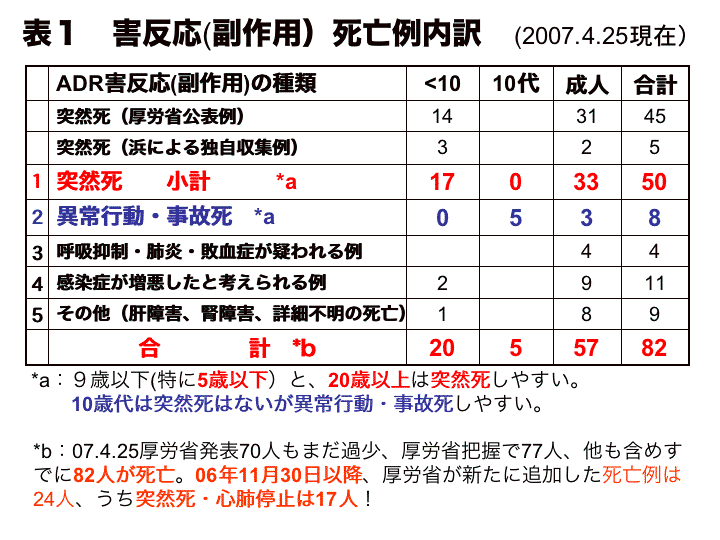
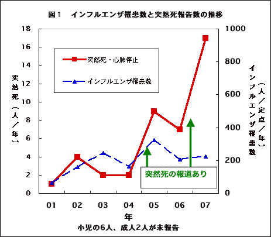
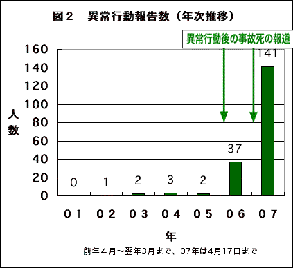

（2007.6.13号）
『薬のチェックは命のチェック』インターネット速報版No88
6.16タミフル安全対策調査会にて
意見陳述予定
中枢抑制の性質を理解し、突然死・異常行動
との因果関係を認めるよう
医薬ビジランスセンター(薬のチェック)は、来る6月16日開催される予定の安全対策調査会に対して6月12日、以下の意見書を提出し、意見陳述することになりました。提出版の意見書本文と図表は別ですが、ここには、図表を本文の中に示します。公開であり傍聴可能です。多数の傍聴を期待します。
６月１４日追記：
６月１６日の安全対策調査会では、「薬のチェック」から浜代表の他、
薬害タミフル脳症被害者の会から軒端代表、
奥西秀樹教授（島根大学医学部・薬理学）および、
薬害オンブズパースン会議からも意見陳述がなされる予定です。
2007年6月12日
安全対策調査会意見書
NPO法人医薬ビジランスセンター（薬のチェック）
代表 浜 六郎
〒543-0062 大阪市天王寺区逢阪２-３-２ 402
TEL 06-6771-6314 FAX 06-6771-6347
URL: http://www.npojip.org e-mail gec00724@nifty.com
NPO法人医薬ビジランスセンター（通称：「薬のチェック」）は「医薬品、および医薬品使用、医薬品行政に関する情報収集、調査、研究を行ない、その活動の成果を医療関係者および市民に還元することにより、薬害を防止し、科学的に確かな証拠に根ざした、患者・市民にとって意味のある適切な医療の普及をはかり、医療の向上に努める（当センター定款）」ために2000年に設立された特定非営利活動法人です。製薬企業の援助を受けずに『薬のチェックは命のチェック』（一般向けの薬の情報誌）を年４回発行しています（発行部数各5,000〜10,000）。医薬品・治療研究会（別府宏圀代表）の発行するTIP（正しい治療と薬の情報）誌とともに、同趣旨で運営される世界の医薬品情報誌（drug bulletin）の国際組織、国際医薬品情報誌協会（ISDB: International Society of Drug Bulletins）の一員でもあります。
「薬のチェック」では2005年2月、文献[1]の中に発見したリン酸オセルタミビル（タミフル）服用後の睡眠中突然死4人（いずれも幼児）につき検討を加え、その死因は脳中に高濃度となったタミフルによる中枢抑制に伴う呼吸抑制によるものであり、因果関係が濃厚であることを『薬のチェック』誌[2]とＴＩＰ（正しい治療と薬の情報）誌[3]で世界に先駆けて指摘し、乳幼児には使用しないように警告してきました。また、2005年11月の日本小児感染症学会において、新たに突然死が判明した2歳児のほか、異常行動から事故死した2人について報告し[4]、異常行動は中枢抑制に伴う脱制御（dyscontrol）によるものであり因果関係が濃厚であると指摘し、警告しました[4]。ところが、その後も、2006年7月に沖縄で１人が、また2007年に入って2月に続けて2人が亡くなり、異常行動死では合計５人の10代の若い命が失われました。
また、本年4月26日の厚生労働省（厚労省）発表データ等を合計すると、タミフル服用後の副作用死亡は82人にのぼり、うち50人が突然死あるいは突然の心肺停止による死亡[表1]です。


なかでも、当センターからの情報により「突然死」がマスメディアで報道された2005年と2007年の冬のシーズンに厚労省への突然死の報告数が突出して増えています（図１）。
また、2005年までの5年間でわずか8件であった異常行動の報告が、学会発表後の05/06年から急増し37件、06/07年のシーズンには合計141件に急増しました（図２）。報道による注目効果が報告件数増にあらわれていると考えられます（報告が氷山の一角であることを示しています）。

このような事情から、3月23日、柳澤厚生労働大臣は突然死を含めた因果関係の見直しを明言され、４月４日に開催された本年度第１回の安全対策調査会において因果関係再検討のための作業部会が組織されることになりました。
すでに、その際に、以下の点に留意するよう、NPO法人医薬ビジランスセンター（薬のチェック）から要望書（4月4日付け）[6]を提出しておりましたが、今回、その後の状況をも踏まえ、あらためて問題点を指摘し、安全対策調査会（国）として検討すべきことを記します。
なお、[ ] 内[s数字]は、資料番号5)のスライド番号を示しています。
因果関係の検討に際して留意していただきたい事項および検討課題
- タミフルの性質について十分な理解を
動物実験結果からタミフル未変化体は中枢抑制剤であり、血液-脳関門（ＢＢＢ）が障害されるインフルエンザ罹患初期には、呼吸抑制で突然死、異常行動を起こしうることは明瞭である[5,7,8]。
- タミフル未変化体はＢＢＢ障害ラットを体温低下、動作緩慢、呼吸抑制により死亡させるため、睡眠剤や麻酔剤同様、中枢抑制剤としての特徴を満たす[5,s22]
- 1000mg/kg で４分の３（18/24）が1回目投与後7時間以内に死亡。安全量は血中濃度換算で10倍。脳中ＣmaxはＢＢＢ非障害ラットの3000倍。死亡前チアノーゼ（6/18）、剖検で肺水腫(9/18)が高頻度[5,s22]。未変化体脳中Ｃmaxと死亡割合は高相関（r=0.961）
- 中枢抑制剤のdyscontrol（脱制御）による異常行動・幻覚は薬理学の常識である
- インフルエンザ急性期には高サイトカイン [5,s53-55] のため、BBBが障害され、タミフル未変化体の脳中濃度は高くなり、呼吸抑制から突然死、心肺停止し、異常行動を起こしうる
- 臨床例の検討に際しての基本的な考え方
多くの医師が因果関係を否定しえない「副作用」として報告している多数の突然死例、異常行動例を、個々にではなく、ケースシリーズとしてその類似点、共通点、連続性について検討していただきたい。そうすれば、心肺停止例、突然死例、蘇生後肺水腫（死亡、生存）、後遺症例など、一連の重症度の例が見えてくるはずである[5,s23-28]。
- 臨床症例の検討、因果関係の考察に際して留意すること
- ハイリスク者（合併症保有例）であること、高熱時の発症、他の薬剤を併用していることを、関連否定の根拠にしないこと。原因が重なれば、より害反応は出現しやすくなるからである
- 服用続行で症状が消失する例の存在は関連否定の根拠にならない（回復期にＢＢＢ機能も回復）
- 睡眠中突然死例や心肺停止遷延蘇生例の肺水腫は、呼吸抑制の結果と解釈すること
- いわゆる「インフルエンザ脳症」はタミフル導入前に激減したことに留意すること：
- かぜでも非ステロイド抗炎症剤（NSAIDs）の関与で脳症は生じ死亡率も増加する[s8-12]
- NSAIDs規制後、死亡するほどの重症脳症は激減した[s13-16]
- タミフル服用後の異常行動・事故死や突然死の病像は従来の脳症とは全く異なる[s23-28]
- ただ、タミフル服用後でも後遺障害を生じ蘇生1-2か月後に死亡した例も[s25-27]
- 横田班調査の結果、タミフルの脳中濃度がピークとなる初回使用後（初日の午後）に、種々の異常言動がいずれも有意に高率。疫学的にも十分関連が証明され否定する根拠はない[s37-50]
- 突然死、異常行動死以外の害反応例として、肺炎や敗血症が悪化したと考えられる例、糖尿病の発症・悪化、消化管出血、神経障害の遷延例などが相当数報告されている[s36]。タミフル活性体によるneuraminidase（sialidase）活性阻害[9]の影響である可能性を考え検討すること。
- 今後の検討課題について
- 動物実験の原報告書で死亡に至る症状の詳細を確認すること
- 感染動物モデルで成熟動物でもタミフルが脳中移行することを確認すること
- タミフル未変化体と活性体の受容体結合能を分析すること。特に、未変化体タミフルはベンゾジアゼピン受容体（中枢および末梢型）への結合、活性体タミフルはシアリダーゼsialidase（Neu１〜４）への結合に関する分析は必須である
- 臨床試験における異常行動・事故死、突然死例の有無の検証を
- 沖縄県で死亡した中学生の脳中未変化体タミフル濃度を公表すること
- 突然死や異常行動死され、脳組織が保存されている例では、可能ならタミフル未変化体、活性体の濃度を測定すること。さらに万が一、今後新たな突然死や異常行動死が生じた場合には、脳中、血中の、未変化体および活性体タミフルの濃度の測定を義務化すること
- 副作用被害救済制度で申請されている例も含めて検討すること
- 突然死･急性心肺停止ならびに異常行動からの事故死、あるいはそのために重篤な後遺症が残ったが未報告の場合が多数にのぼると考えられる。これらにつき遡って調査すること。
- 上記調査で判明した各人につき、因果関係が否定できない例は副作用被害として救済すること
- 現在検討中の項目に関する問題点
- 健康人を対象としたタミフルによる脳波への影響などに関するプラセボ対照試験は、陰性結果が出ることは実施前から分かっており、非倫理的であるため取りやめること
- 心肺停止や突然死は、大部分が呼吸抑制・低酸素血症による呼吸停止によるものであり、心疾患によるものとは考えられない（不整脈死では肺水腫は現れない）ので、留意されたい(ただし、活性体オセルタミビルによるQT延長はありうる)
参考文献および資料のリスト
- 塩見正司，インフルエンザ脳症の臨床スペクトラム，小児内科，2003：34（10）；1676-1681
- 薬のチェック編集部、乳幼児にはタミフルは禁止に、『薬のチェックは命のチェック』No12改訂版 2005年3月
- 浜六郎、林敬次、オセルタミビル(タミフル)初回服用後睡眠中に突然死、安全確認まで乳幼児には禁忌と考えるべき、TIP「正しい治療と薬の情報」2005.2月号
- 浜六郎、『薬のチェック』速報No59 タミフル脳症（異常行動、突然死）を日本小児感染症学会で発表（ポスター）
- 浜六郎、『薬のチェック』速報No86、5.20薬剤疫学シンポ発表スライド（資料添付）
- 『薬のチェック』速報No82安全対策調査会への要望、
- 浜六郎、タミフルは初日昼（初回服用後）に異常言動を起こす-厚労省研究班報告書とFDA報告を正しく読めば因果関係は明瞭、TIP誌2006年11月号（その1）、12月号（その２）より )（資料添付）
- 浜六郎、FDAは異常行動とタミフルとの関連を実質的に認め警告、TIP誌2006年11月号より（資料添付）
- Li CY, Yu Q, Wei L. et al. A nonsynonymous SNP in human cytosolic sialidase in a small Asian population results in reduced enzyme activity: potential link with severe adverse reactions to oseltamivir. Cell Res. 2007 Apr;17(4):357-62.（資料添付、ただし考察については異論あり）
市民患者が「ほんまもん」の情報を持つことが真の改革につながる
薬の「ほんまもん」情報は『薬のチェックは命のチェック』で！！